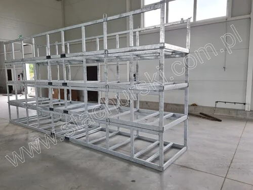

MADE IN KAMIENNA, POLAND
Built on experience.
Made for the work.
A family metalworking business making practical equipment for the glass and window industry since 1974.
— A workshop with a long view
Steelwork shaped
around real work.
Stachurski has operated continuously since 1974. The company’s work has evolved over time—from steel structures and woodworking machinery to storage and transport equipment for glass, windows and other made-to-order steelwork.
Founder Zbigniew is supported by his sons Piotr and Grzegorz. The business combines hands-on metalworking experience with engineering knowledge, including CAD-supported design.
Explore the product range ↗
1974The workshop begins
2005The next generation joins
TodayPractical steelwork for glass professionals
What the workshop makes
Racks, trolleys, pallets, tables, shelving, conveyors, accessories and other steel constructions—configured around real storage and handling needs.